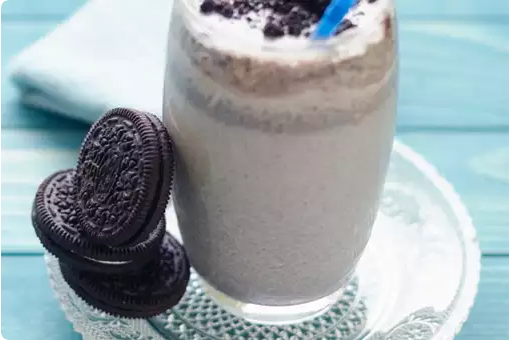

Oreo Shake(Milk Shake)
Ingredients
-
4 Oreo cookies
-
1 cup vanilla ice cream
-
1 tablespoon sugar
-
1 cup milk
-
1 tablespoon chocolate sauce
Directions
- Step1: Crush the cookies:
To prepare this delicious shake recipe, take a bowl and coarsely crush the Oreo cookies in it. You
don't need to powder them, they should be crushed enough to be blended into a shake.
- Step2: Blend it all together:
Now, pour milk and chocolate syrup to a blender. Also, add Oreo cookies and ice-cream to the
blender. Blend well all the ingredients until combined completely.
- Step3: Top up with more crushed cookies:
Crush and crumble some Oreo cookies in a bowl. You can also put them in a plastic bag and pound them with a rolling pin.
- Step4: Serve and indulge in the goodness:
Pour the prepared milkshake into a glass. Finally, top the milkshake with the crumbled Oreo cookies. Serve immediately with a straw.